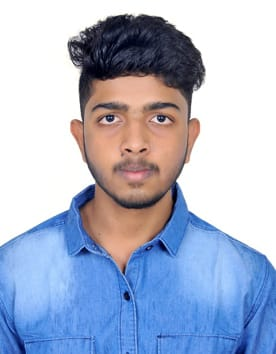

DEEPAK U YALIWAL

Summary
An 18-year-old Karnataka prodigy, excelling in everything from JEE Mains and Hindustani Shastriya Sangeeta to video editing and web development, now joining B.Tech in RVCE and captivating audiences on YouTube as the "Dhruv Rathee of Karnataka".
Education
- J S S Public School , Huvina Hadagali.
- Consistently top performer and academic topper throughout schooling.
- Excelled in both academics and extracurricular activities.
- Represented the school in various competitions and events.
- Mahesh PU College, Bengaluru.
- Topper of the College
- Cleared JEE mains with 97.2%ile
- RV College of Engineering, Bengaluru
Work Experience
- Worked as a Freelance Video editor
- Part-time Youtuber
Skills
- Advanced Video Editor
- Intermediate Thumbnail Designer
- Basic Web Developer
- Intermediate Percussionist
- 6+ Rubic's Cube Solver
- Intermediate Drama Actor
Achievements
- Inspire Awards 2018
- Fastest Growing Kannada Youtuber
Other